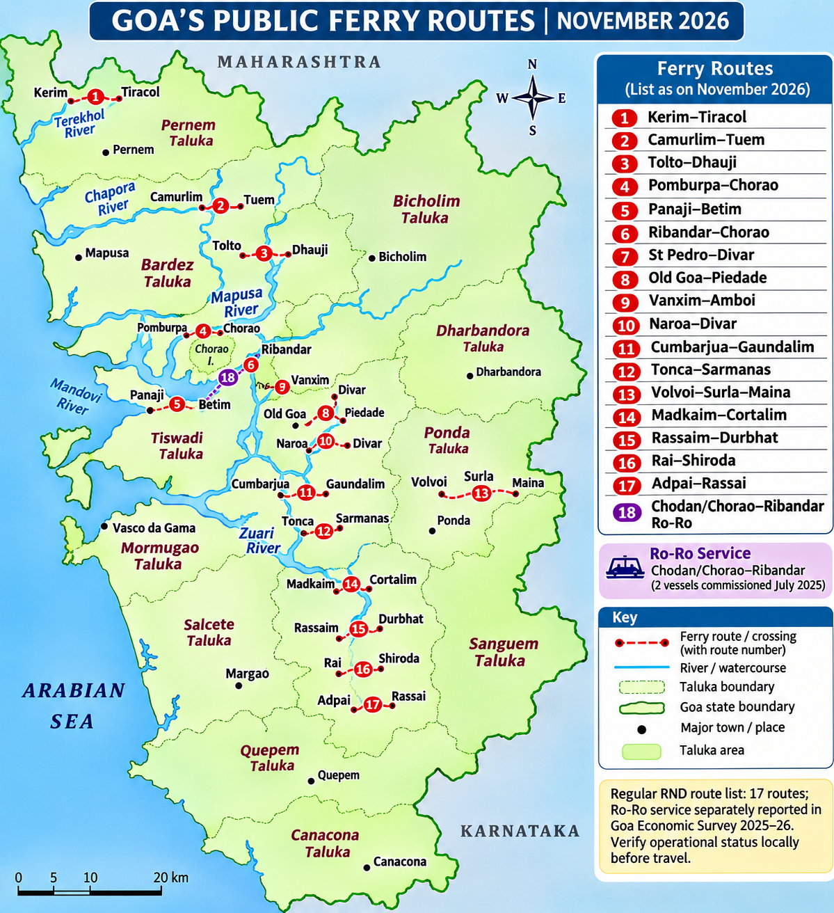

Original map image not yet uploaded
The atlas is ready for the original map, but GitHub still needs the file goa-ferry-routes-reference.png uploaded alongside index.html.
Select a numbered marker on the original illustrated map to explore its crossing. Route 07 is in the list but not numbered on the supplied illustration.